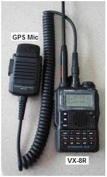
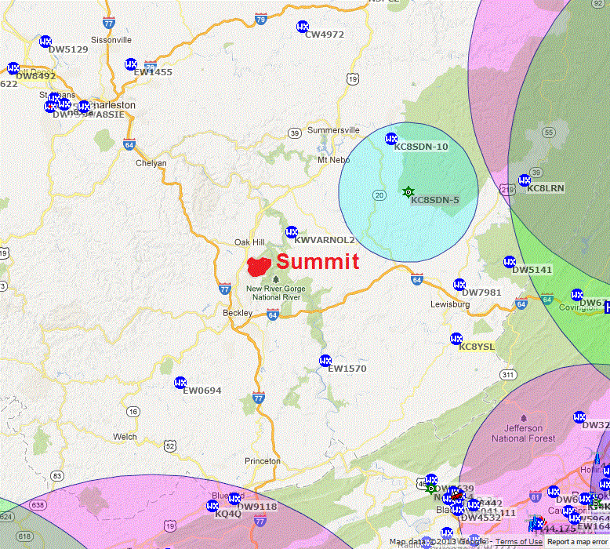
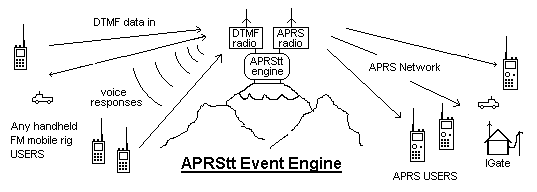

APRS at Jamboree 2013
APRS at Jamboree 2013
APRS at Jamboree 2013
APRS at Jamboree 2013

 Jamboree at the Summit! The 2013 Jamboree is at its new location at the Summit
in West Virginia and this page will keep you informed about using your APRS radio or smartphone AP
at Jamboree. If all goes well, you may also be able to use any old HT with a DTMF keypad to
enter APRS data. Here is an overall
map of the Summit area.
Jamboree at the Summit! The 2013 Jamboree is at its new location at the Summit
in West Virginia and this page will keep you informed about using your APRS radio or smartphone AP
at Jamboree. If all goes well, you may also be able to use any old HT with a DTMF keypad to
enter APRS data. Here is an overall
map of the Summit area.
APRS at Camp: Not only can APRS help you find each other and track your troops movements for display back home, but also your APRS HT can be used for sending back messages and email for scouts to show the value of ham radio in the field. APRS is ideal for field use since it helps everyone maintain tactical situational awareness locally while also providing global connectivity for messaging. You don't even need to bother with a GPS. Just manually enter your position using the GRIDDED map shown below. Just change the last 2 digits in your lat/long as you move about camp and everyone will see you. (Just as we had hoped back with the 2010 APRS Jamboree plan).
Digipeater and IGate: APRS will have a PC and radio in the K2BSA Jamboree station which will hopefully serve as our only digipeater and Igate. Here is a photo of the 2010 K2BSA tent. We do not have access to any of the other 2-way and cellular sites on the Summit. The nearest digipeater KC8SDN-5 is over 35 miles ENE away but is in a somewhat favorable direction. The other major digipeaters are to the south and blocked from the K2BSA site. There will be a significant Cellular and WiFi network throughout the camp so APRS smartphone APS will be useful. The IGate will link us in.
APRS Jamboree Map 2013: The Map below can be used by anyone at Jamboree to place themselves on the APRS and Internet active maps by simply changing the last 2 or 3 digits of Lat/Long using the grid on the map. Your posiion will be accurate to about 60 feet, making it easy to find other ham radio operators. Of course if your APRS radio has GPS, then your position is automatic. But even without GPS, you can manually enter the digits either with your APRS keypad, your Smartphone APRS AP or even using a DTMF radio.
APRS GOAL for Jamboree! Our goal is to not only support APRS radios, and Smartphone APs, but to also allow any ham radio HT to communicate into APRS while at Jamboree. We want to implement APRStt or APRS Touch Tone in the area so you can also use ANY HT with a DTMF keypad to report your status or position into APRS.
 APRS Coverage at Jamboree: The APRS network can provide coverage not only in your travels across country to and from Jamboree, but also down to your campsite. Simply click on this Last 3 hours Live Jamboree APRS map to see the current APRS activity in and around the Summit, WV. The need for a Digipeater at the Summit is obvious from this map of existing digipeaters in the area shown at right. Having a digi at the Summit will provide the needed HT coverage there. Back in 2010, Stephen Shearer, WB3LGC and Ed Dudley put together this 2010 list of scouts and adults attending Jamboree with APRS talent. We hope APRS folk going to Jamboree will identify themselves so we can update this for 2013.
APRS TouchTone goal for 2013! We hope that everyone with an HT can participate in APRS, not just those with the special APRS radios, because we hope there will be an APRStt (Touchtone) gateway that lets these users also send their position and status into the APRS system at the event. APRStt is just a gateway centrally located and running APRSspeak software on a laptop with two radios as shown to the right. It acts as a gateway between the DTMF users on 146.58 and the rest of the APRS users on the APRS channel (144.39). It receives DTMF data and responds with Voice Reports from APRS. When the new APRSspeak software is ready for release, you can get it here.
SENDING YOUR POSITION BY DTMF: To send your position first you have to program a DTMF memory in your HT with your DTMF text equivalent callsign using the format of AxxxxxxxxxxVK# using the two-key method. David, K3PO wrote a simple Callsign Translator to help you enter your call into your DTMF memory. Once that is done one time, then all you have to do to report your position is 3 steps: 
When received by APRStt, it will confirm as "W3XYZ at YYY and XXX" and it will put inject your data into a packet into APRS with a -12 SSID on your callsign and an APRStt symbol so that they can be distinguished from normal APRS users who will also show on the same map.
Callsigns and Suffix: Your full callsign in DTMF takes 12 digits but your suffix can be coded in only 3. This is why APRStt will accept your suffix (3 digits) at any time after it has recevied your full callsign at least once. This makes the transmissions shorter. If there is a conflict in suffix, then APRStt will ask for a spelled-out suffix (6 digits). If a callsign or suffix has not been received in 3 days and a new callsign arrives in conflict, then the older one will be dropped from the system.
FREQUENCY: You can also add text to your position. Probably the most valuable information on your position is to show what voice frequency you are monitoring. To transmit your Frequency, just use the format CFFFFFF* which is the frequency in KHz, again, followed by your callsign from memory.
For more info on APRStt, see the APRStt web page
Applications of APRS at Jamboree: Remember, APRS is just another tool in the ham radio operators tool bag. It is not an end in itself. So how APRS will be used at Jamboree will depend on the amateur radio operators that will be there and are part of the organization. We are only providing the tool. Think outside the box how we can use position reporting or any othere numeric data from HT's during jamboree.
Bob, WB4APR
APRStt BACKGROUND:
We first demonstrated the APRStt concept back in 2001 at Dayton using hardware DTMF decoders and a parallel port voice synthesizer, It was again demonstrated in 2009 by Rick Ruhl W4PC. But now finally in 2010, Doug KA2UPW demonstrated a working version at Dayton called APRSspeak. It runs on a PC with nothing but a pair of radios, One handling the DTMF users and voice on the APRStt channel of 146.58 (where available) and the other on APRS 144.39. This establishes a local APRStt zone where any nearby HT that ID's itself by DTMF memory will be converted to APRS at that location. or they can enter their position data too.
THINKING OUTSIDE THE APRS TRACKING BOX:
Everyone has heard me say over and over that APRS is not a tracking system, but is a common local/global information exchange and distribution system for tactical and real time data of immediate communincations support value to users. To appreciate the potential of APRStt, you have got to forget about APRS as a tracking system, and think about what kinds of simple digital data can be exchanged in support of an event or local activity. Here are several DATA items that can easily be sent by DTMF::
VOICED INFORMATION: Even without using DTMF or inputing any data, anyone can tune into the APRStt (or APRSspeak) voice channel and hear unsolicited information of local significance. APRS Positions are normally reported as a direction and range from a reference point (usually the APRStt engine). For example "WB4APR is .35 miles northeast". Of course APRStt users can change the reference point by DTMF command such as "from the repeater" or "from downtown" or "from FINISH", etc. However, for Jamboree where everyone will have a copy of the paper map with the GRID on it, APRStt voice can also speak positions using the 3x3 digit grid system. For example, here are some of the unsolicited reports that were implemented in APRStt1.0 back in 2001:
For example, the callsign WB4APR in DTMF is spelled as A9A2B42A7A7C71#. (or later using the suffix version is onlyA277#) That one callsign-burst when received by the APRStt receiver and forwarded into the APRS system yields all of the following important information:
APRStt VOICE RESPONSE: The feedback from APRStt to DTMF users is all by synthesized voice. The APRStt acknowledges a properly decoded DTMF checkin with "Welcome CCCC". APRS messages to a DTMF user are spoken. APRS positions when spoken over APRStt are always spoken as a DIRECTION and DISTANCE from a local REFERENCE. By defualt, the local reference is the location of the APRStt engine itself, but this reference can be changed by the DTMF user to any other APRS location in the system. DIRECTION is spoken as the 16 cardinal points of the compass as in North, NorthNortheast, Northeast, EastNorthEast, East, etc. This verbal positioning lets everyone in the club or at an event participate in the exchange of APRS data, not just those with the APRS radios. Even the old codger that shows up with his venerable 20 year old HT can participate!
 APRStt IS SIMPLE! All you need is two radios and a laptop running the
APRStt software (APRSspeak) and then it serves as the gateway between the DTMF users and the
rest of the APRS system as shown to the right.
It lets 100% of ham radio users "check-in"
on APRS to facilitate end-to-end contact between operators, not just
the 5% that show up with APRS walkie-talkies.
APRStt IS SIMPLE! All you need is two radios and a laptop running the
APRStt software (APRSspeak) and then it serves as the gateway between the DTMF users and the
rest of the APRS system as shown to the right.
It lets 100% of ham radio users "check-in"
on APRS to facilitate end-to-end contact between operators, not just
the 5% that show up with APRS walkie-talkies.
APRStt responds! On hearing the DTMF callsign and sending out the position and frequency packet on the APRS channel, the more advanced APRStt implementations will respond by voice with "Welcome W3XYZ!" as confirmation. This is really no different than what mobiles do now "WB4APR LIstening", except that using the DTMF method is machine readable and allows this presence to the global ham radio community via APRS instead of falling on deaf ears.
APRStt two-way: Now then, these same more sophisticated APRStt systems can also watch the APRS system for any messages addressed to you. Hearing any, they will SPEAK them back to you on the voice channel! The specialized full two-way APRStt Engine can be as simple as a laptop at any repeater site or located in the valley at a home station as shown below.
APRStt is the gateway for DTMF voice users to report themselves to the global APRS community of users. It enables all non-APRS HT's and Mobile radios to be located and this information is fundamental to facilitating ham radio communications. See some examples:
Bob, WB4APR
{kind=link}
{kind=link}